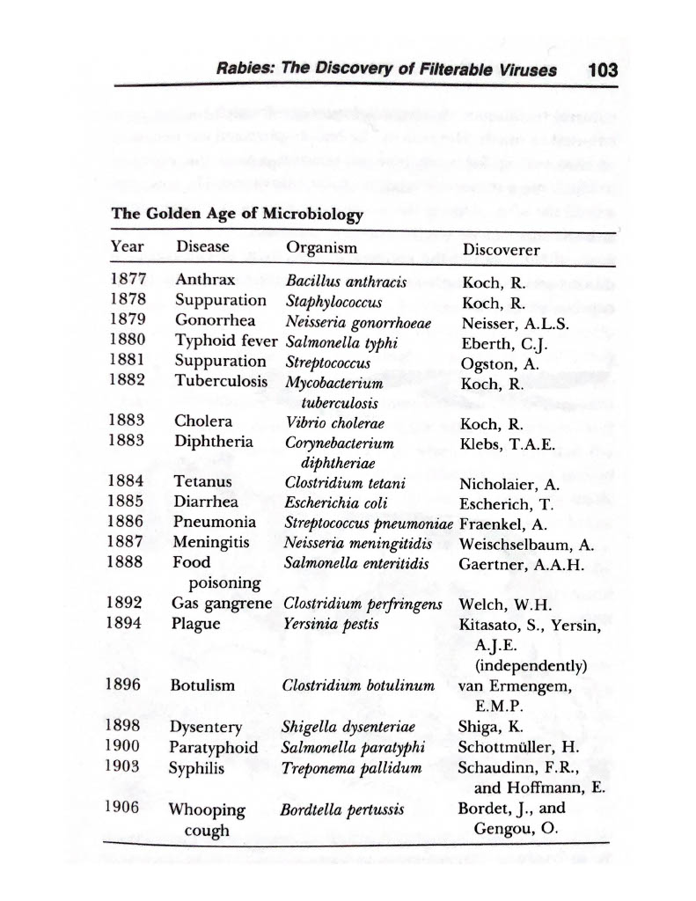

December 28, 2022
Patrick Collison has a great page on his website titled Fast where he lists "Some examples of people quickly accomplishing ambitious things together." Reading Pasteur and Modern Science by René Dubos you come across the following table. This struck me as a magnificent example of Fast.
The tremendous results set out in the table stem from the nascent germ theory of disease and practical methods invented by Pasteur and Robert Koch. Essentially a new and powerful explanatory theory combined with a set of laboratory procedures allowed a whole host of diseases to have their disease causing agents identified. This of course also drove progress in treatments and cures for these diseases.
Perhaps, the germ theory of disease was just low-hanging fruit or, perhaps, this is a repeatable phenomenon.
What if entire classes of disease--think cancers, mental health disorders, and neurodegenerative diseases--could be similarly elucidated by a new powerful explanatory theory coupled with practical procedures? Perhaps, the diseases I listed continue to puzzle researchers not because they are any more complex (or more complex to contemporary science relative to how complex the germ theory was to its' contemporary science) than germ borne diseases, but because we are approaching them the wrong way.
Might a modern Pasteur or Koch be able to see our error?